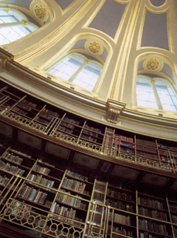

|
La
Reading Room
Qui, per quasi 150 anni, studiosi e rivoluzionari, scrittori, poeti,
musicisti, studenti e copisti hanno consultato le risorse della
migliore biblioteca al mondo. In passato, l'ingresso alla Reading
Room era riservato ai soli titolari di speciali tessere di Reader,
ma oggi diamo il benvenuto a tutti i visitatori che desiderano ammirare
la magnifica architettura della sala e conoscere più da vicino le
collezioni del Museo.
Il Walter
and Leonore Annenberg Centre offrirà 50 terminali di
computer appositamente concepiti per consentire ai visitatori di
accedere ad immagini ed informazioni su migliaia degli oggetti esposti
al Museo.
Vi
è poi la Paul Hamlyn Library,
una bellissima biblioteca che all'inizio contava circa 12.000 volumi
dedicati a tutti gli aspetti delle collezioni del Museo e delle
varie società che le hanno create. Per maggiori informazioni sui
servizi offerti dalla Reading Room, rivolgersi al Banco informazioni
che si trova all'interno di questa sala.
Letture consigliate: The British Museum Reading Room di Marjorie
Caygill è in vendita alla libreria (Bookshop), al prezzo di 5,99
sterline.
La Joseph Hotung Great Court Gallery
Situato al mezzanino, questo centro costruito appositamente per
le mostre speciali rimane aperto fino alle 20.30 il giovedì e il
venerdì.
Il Clore Education Centre
Dietro l'atrio vi sono due grandi auditori che offrono un programma
di lezioni, film e video, oltre a una sede ideale per convegni accademici,
concerti, giornate di studio e spettacoli culturali legati a mostre
speciali. La prima struttura del Museo dedicata specificamente agli
scolari, il Ford Centre for Young Visitors, offre speciali sale
da pranzo, guardaroba e strutture didattiche per le migliaia di
giovani che visitano il Museo durante l'anno scolastico oppure insieme
alle famiglie, durante le vacanze e ai fine settimana.
|
 |